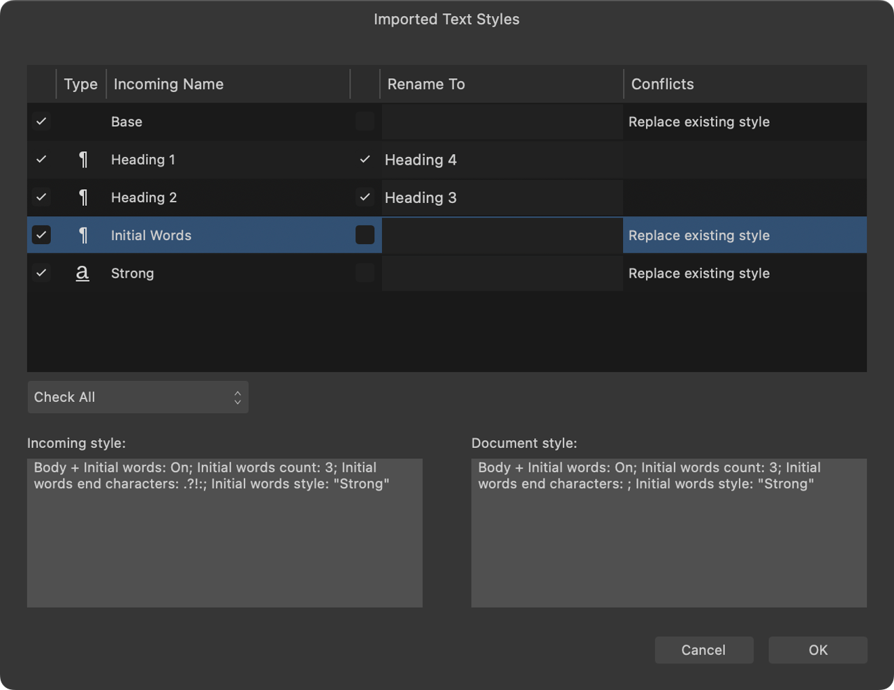

To create a text style from scratch:
To create a text style from scratch:
- Deselect any text.
- On the Text Styles panel, select:
- Create Paragraph Style—to create a new paragraph style.
- Create Character Style—to create a new character style.
- Create Group Style—to create a new group style.
- Adjust the settings in the dialog.
- Click OK.
The new 'empty' character and paragraph styles named [No Style], are applied to the portion of text.
 To create a text style from an existing style:
To create a text style from an existing style:
- (Optional) Format and select a portion of text or click inside a paragraph.
- On the Text Styles panel, click on a listed style's options menu and select:
- Duplicate—to start with settings exactly the same as the selected style.
- Create Style Based on—to automatically set the dialog's Based on option to the selected style.
- Adjust the settings in the dialog.
- Click OK.
If you want apply the new style to the currently selected text, enable Apply style to selection in the dialog.
To edit an existing text style:
- On the Text Styles panel, click on a listed style's options menu and select Edit.
- Adjust the settings in the dialog.
- Click OK.

 To update a text style:
To update a text style:
- Select text that is formatted with the text style.
- Adjust local formatting via the context toolbar, Character panel or Paragraph panel.
- On the context toolbar or the Text Styles panel, select Update Paragraph Style or Update Character Style as appropriate.
The text style is updated to match the local formatting.
To assign a keyboard shortcut to a text style:
- On the Text Styles panel, click on a listed style's options menu and select Edit.
- In the dialog, select the Style section and then click inside the Keyboard shortcut box.
- Press your required key combination.
- Click OK.
To import text styles from documents:
- Do one of the following:
- From the Text Styles panel, go to Panel Preferences and select Import Styles.
- Select Text>Text Styles>Import Text Styles.
- From the dialog, navigate to and select a document containing the text styles you would like to import and click Open.
- On the next dialog that appears, the text styles in the imported document are listed, giving you the option to rename, replace, view, and select the individual text styles within the document you would like to import.

The imported text styles replace existing styles or are added as new styles to the Text Styles panel.